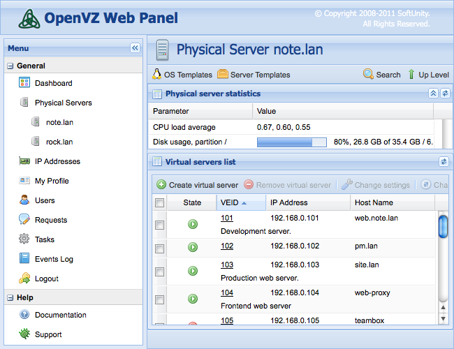

OpenVZ Web Panel
OpenVZ Web Panel is a GUI web-based frontend for controlling of the hardware and virtual servers with the OpenVZ virtualization technology.
Announcements
- 2011/04/17 - OpenVZ Web Panel 2.0 is available! It's a major release. Most important features are Remote API, IP addresses management, virtual servers migration. Also a lot of bugfixes were made. Thanks to all the people who helped in release preparation. See ChangeLog for more details.
Demo
Demonstration of web panel's user interface is below:

Installation
The most simple way to install OpenVZ Web Panel is to run the following command (under root):
wget -O - 'http://ovz-web-panel.googlecode.com/svn/installer/ai.sh' | /bin/bash
After installation Panel should be available by the following URL:
http://<your-host>:3000
Default administrator's credentials are: admin/admin. Don't forget to change default password.